Sea \(\{ T, F\} = B\)
Denotemos dos operaciones binarias por:
$$ \land : B \times B \to B $$
$$ \lor : B \times B \to B $$
y definámoslas como:
 
Uno puede verificar que ambas operaciones son asociativas, conmutativas y que el elemento \(T\) sirve como identidad a la operación \(\land\), mientras que el elemento \(F\) sirve como identidad a \(\lor\). De esta manera, los pares de objetos \(\left(B, \land\right)\) y \(\left(B, \lor\right)\) son monoides conmutativos.
Con esta construcción podemos plantear las "leyes de De Morgan" como:
Con esta construcción podemos plantear las "leyes de De Morgan" como:
\((B, \land) \cong (B, \lor)\)
Demostración:
Un isomorfismo \(\phi: (B, \land) \to (B, \lor) \) es a su vez una biyección \(\phi: B \to B\). Dado que \( |Aut_{Set}(B)|= 2\), demostraremos que el ciclo \((T F)\) es dicho isomorfismo. Sean \( \alpha, \beta \in B\). Supongamos que \( \alpha = \beta\), así
$$ \phi( \alpha \land \beta ) = \phi(\alpha) = \phi(\beta) = \phi(\alpha) \lor \phi(\beta), $$
finalmente, supongamos que \( \alpha \neq \beta\), si hacemos que cada elemento adopte un valor particular, la conmutatividad implicará el caso en que adopten el valor opuesto, por tanto
$$ \phi(T \lor F) = \phi(T) = F = F \land T = \phi(T) \land \phi(F).$$
Completando la demostración.
Usualmente denotamos el isomorfismo por "\(¬\)", y nos referimos a él como la operación de "negación".